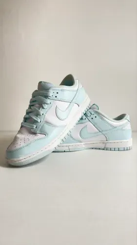
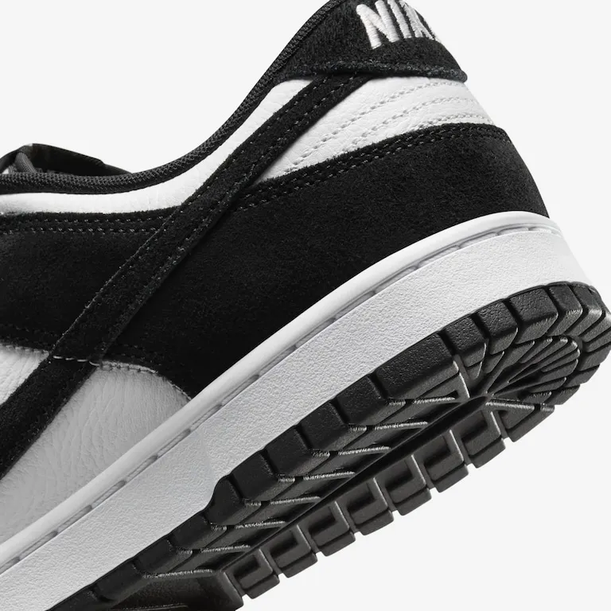
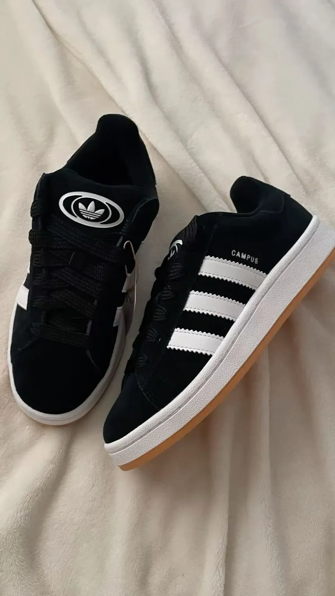
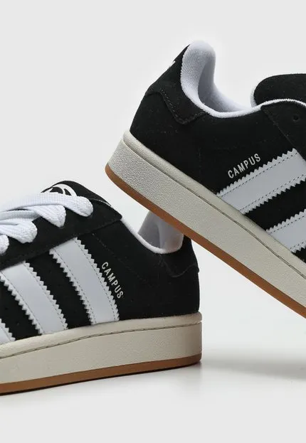
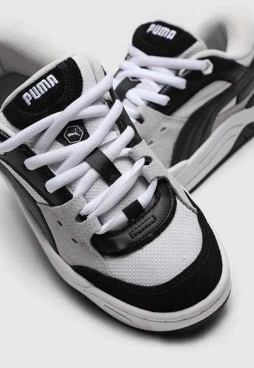
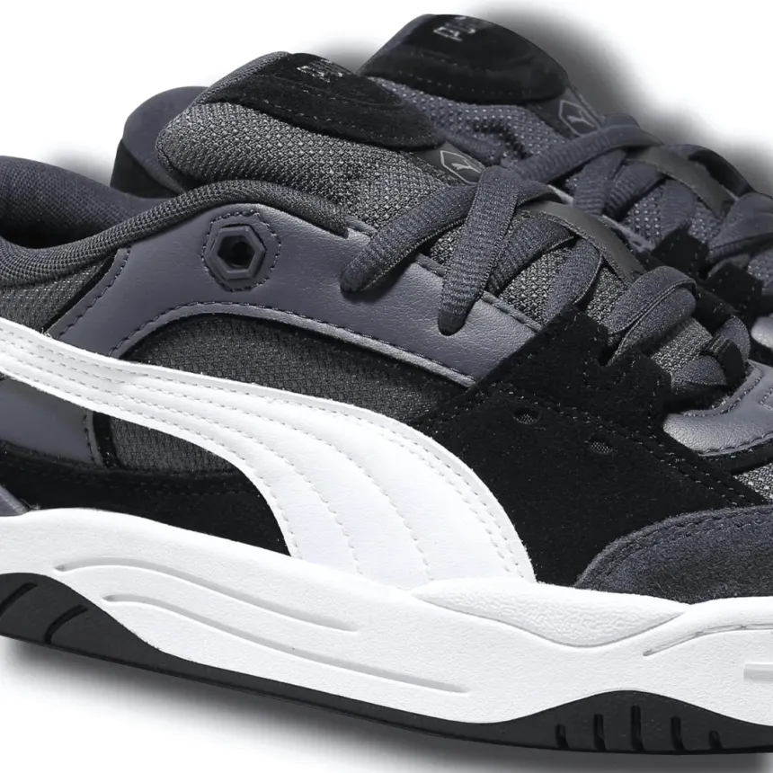

Nike Air Max



O conforto dos Nike Air varia significativamente conforme a tecnologia de amortecimento e o modelo escolhido, sendo recomendado adaptar a escolha ao tipo de uso e ao biotipo do pé.
- Marca: Nike
- Cor: Branco
- Tamanho: 38 ao 43
- Preço: R$ 599,90
- Amortecinto confortavel
- Couro sintético e malha respirável
- Ideal para uso casual
- Design moderno
Site Oficial da Nike
Adidas Campus



O conforto do Adidas Campus é amplamente reconhecido como superior, especialmente quando comparado a modelos como Samba e Gazelle, sendo muito confortável para uso diário.
- Marca: Adidas
- Cor: Preto
- Tamanho: 38 ao 43
- Preço: R$ 499,90
- Muito confortavel
- Estilo Casual
- Ideal para uso do dia dia
- Design moderno
Site Oficial da Adidas
Puma Smash



O conforto do Puma Smash é amplamente reconhecido, sendo uma prioridade da marca tanto para uso casual quanto esportivo.
- Marca: Puma
- Cor: Branco
- Tamanho: 38 ao 43
- Preço: R$ 399,90
- Muito confortavel
- Estilo Casual
- Material de qualidade
- Design moderno
Site Oficial da Puma